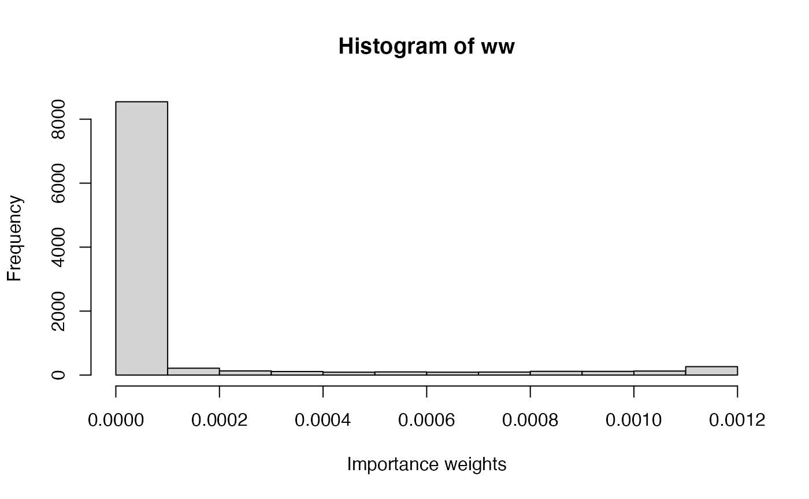
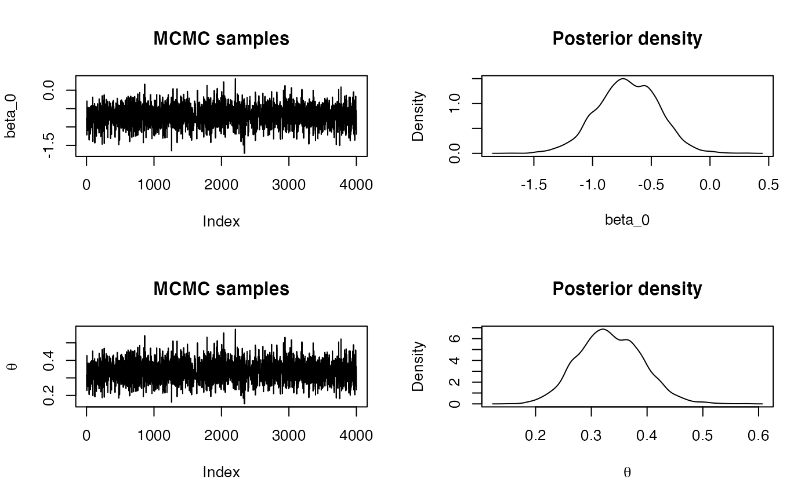
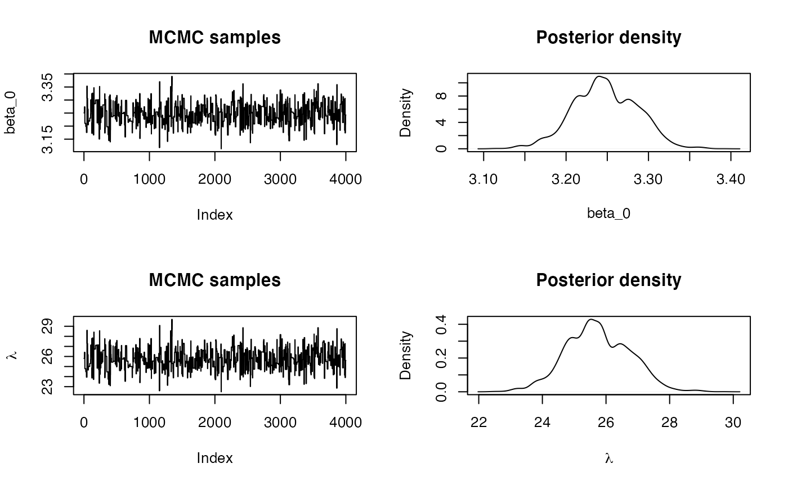

Solutions 7: Generalized linear models
VIBASS4
July 2021
p7_solutions.RmdIntroduction
In the previous practical, Bayesian inference for linear models using Importance Sampling (IS) and the Metropolis-Hastings (M-H) algorithms has been introduced. In this practical you will be working with generalized linear models (GLMs) on the binomial and Poisson examples described earlier. In particular, you will be implementing the IS and M-H algorithms for Bayesian inference on GLMs. In case you need to refresh yourself on the details about IS and M-H, please check the lecture notes or Practical 5.
Example: Binomial-Beta Model
This data set is described in detail in previous practicals; it concerns the recorded the number of red M&M’s in a tube with \(N_i\) M&M’s for different tubes.
The model can be stated as follows:
\[ \begin{array}{rcl} y_i & \sim & Bi(N_i, \theta)\\ \theta & \sim & Be(1, 1) \end{array} \]
You can use the following data set for this exercise:
data <- data.frame(MMs = c(20, 22, 24), red = c(5, 8, 9))These data reproduce different counts of red M&M’s in three different tubes, with MMsrecording the total number of M&M’s in the tube and red the number of red ones.
Please check Practical 5 in case you need to remember the details of the implementation of the IS and M-H algorithms for this particular model. Also, you can take the R code from Practical 5 and modify it to complete the exercise above.
Exercises
Generalized linear models
The current model can be expressed as a generalized linear model as follows:
\[ \begin{array}{rcl} y_i & \sim & Bi(\theta, n_i)\\ \textrm{logit}(\theta) & = & \alpha\\ \alpha & \sim & N(0, \tau_{\alpha} = 0.001) \end{array} \]
Note that now the model parameter \(\theta\) is linked to a linear predictor (\(\alpha\) in this case) via the logit link function. Hence, the model parameter is now \(\alpha\).
This GLM can be easily fitted using IS and M-H by treating \(\alpha\) as the unique model parameter.
Importance sampling
In order to fit this model using the IS algorithm, values of \(\alpha\) need to be sampled. Given that \(\alpha\) is not bounded, we can use a Normal distribution with zero mean and precision 0.1. Alternatively, the mean of the sampling distribution can be set to a more reasonable value, close to the logit of the average proportions of red M&Ms in the sample (for example, -1.5).
- Implement the IS algorithm using the two sampling distributions proposed above, i.e., a Normal with zero mean and precision 0.1 and a Normal with mean -1.5 and precision 0.1.
n_simulations <- 10000
set.seed(12)
# The two proposed sampling distribution means - uncomment the one you want
alpha_sim_mean <- 0
#alpha_sim_mean <- -1.5
alpha_sim <- rnorm(n_simulations,alpha_sim_mean,sqrt(1/0.1))
# Log-Likelihood (for each value of theta_sim/alpha_sim)
loglik_binom <- sapply(alpha_sim, function(ALPHA) {
theta_sim <- plogis(ALPHA)
sum(dbinom(data$red, data$MMs, theta_sim, log = TRUE))
})
# Log-weights: log-lik + log-prior - log-sampling_distr
log_ww <- loglik_binom + dnorm(alpha_sim, 0, sqrt(1/0.001), log = TRUE) - dnorm(alpha_sim,alpha_sim_mean,sqrt(1/0.1),log=TRUE)
# Re-scale weights to sum to one
log_ww <- log_ww - max(log_ww)
ww <- exp(log_ww)
ww <- ww / sum(ww)
hist(ww, xlab = "Importance weights")
- Compute the posterior mean and variance for both sets of results. Are they similar?
# Posterior mean
post_mean <- sum(alpha_sim * ww)
post_mean ## [1] -0.7051561
# Posterior variance
post_var <- sum(alpha_sim^2 * ww)- post_mean^2
post_var## [1] 0.06635267
# Posterior mean - on theta
theta_sim <- plogis(alpha_sim)
post_mean <- sum(theta_sim * ww)
post_mean ## [1] 0.3331007
# Posterior variance - on theta
post_var <- sum(theta_sim^2 * ww)- post_mean^2
post_var## [1] 0.003176116
plot(density(theta_sim, weights = ww, bw = 0.01), main = "Posterior density for theta")
curve(dbeta(x, sum(data$red) + 1, sum(data$MMs) -sum(data$red) + 1), lty = 2, add = TRUE)- Compute and compare the effective sample sizes obtained with both sampling distributions. What do you find? Why do you think that this happens?
## [1] 1172.545
n_simulations## [1] 10000Metropolis-Hastings
Similarly, the previous GLM can be fit using the M-H algorithm. Now, values of \(\alpha\) are proposed, for which a Normal distribution centered at the current value and precision 0.1 can be used. However, the precision value can be tuned if proposed values are rejected too often or not rejected at all.
- Implement the M-H algorithm for this example.
#Proposal distribution: sampling
rq <- function(alpha) {
res <- rnorm(1, alpha, sqrt(1 / 0.1)) #Sample alpha
return(res)
}
#Proposal distribution: log-density
logdq <- function(new.alpha, alpha) {
res <- dnorm(new.alpha, alpha, sd = sqrt(1 / 0.1), log = TRUE)
}
#Prior distribution
logprior <- function(alpha) {
res <- dnorm(alpha, 0, sd = sqrt(1 / 0.001), log = TRUE) #alpha
return(res)
}
#LogLikelihood
loglik <- function(alpha) {
theta_sim <- plogis(alpha)
sum(dbinom(data$red, data$MMs, theta_sim, log = TRUE))
}
#Number of iterations
n.iter <- 40500
#Simulations of the parameter
alpha <- numeric(n.iter)
#Initial value
alpha[1] <- 0.0
for(i in 2:n.iter) {
new.alpha <- rq(alpha[i - 1])
#Log-Acceptance probability
logacc.prob <- loglik(new.alpha) + logprior(new.alpha) + logdq(alpha[i - 1], new.alpha)
logacc.prob <- logacc.prob - loglik(alpha[i - 1]) - logprior(alpha[i - 1]) -
logdq(new.alpha, alpha[i - 1])
logacc.prob <- min(0, logacc.prob)#0 = log(1)
if(log(runif(1)) < logacc.prob) {
#Accept
alpha[i] <- new.alpha
} else {
#Reject
alpha[i] <- alpha[i - 1]
}
}- Compute the posterior mean and variance of \(\alpha\) and \(\theta\).
#Remove burn-in
alpha <- alpha[-c(1:500)]
#Thinning
alpha <- alpha[seq(1, length(alpha), by = 10)]
#Summary statistics
summary(alpha)## Min. 1st Qu. Median Mean 3rd Qu. Max.
## -1.7183 -0.8734 -0.7016 -0.7015 -0.5221 0.3129## Min. 1st Qu. Median Mean 3rd Qu. Max.
## 0.1521 0.2946 0.3315 0.3339 0.3724 0.5776
par(mfrow = c(2, 2))
#Alpha
plot(alpha, type = "l", main = "MCMC samples",
ylab = expression(alpha))
plot(density(alpha), main = "Posterior density",
xlab = expression(alpha))
#Theta
plot(theta, type = "l", main = "MCMC samples",
ylab = expression(theta))
plot(density(theta), main = "Posterior density",
xlab = expression(theta))
- Compare these results to those obtained with the IS algorithm.
The results look very similar - Importance Sampling may be adequate for this simple example, if the sampling distribution is chosen appropriately. Remember that it always possible to tune the sampling and proposal distributions from IS and M-H respectively.
Example: Poisson-Gamma Model
The second example will be based on the Game of Thrones data set, which has also been described in previous practicals. Remember that this is made of the observed number of u’s on a page of a book of Game of Thrones. The model can be stated as:
\[ \begin{array}{rcl} y_i & \sim & Po(\theta)\\ \theta & \sim & Ga(0.01, 0.01) \end{array} \]
We will denote the observed values by y in the R code. The data can be loaded with:
data <- data.frame(Us = c(25, 29, 27, 27, 25, 27, 22, 26, 27, 29, 23, 28, 25,
24, 22, 25, 23, 29, 23, 28, 21, 29, 28, 23, 28))
y <- data$UsAgain, please check Practical 5 if you need to recall the details of the implementation of the IS and M-H algorithms for this particular example. You can also use the R code from Practical 5 to develop the following exercises.
Exercises
Generalized linear models
The current model can be expressed as a generalized linear model as follows:
\[ \begin{array}{rcl} y_i & \sim & Po(\theta)\\ \log(\theta) & = & \alpha\\ \alpha & \sim & N(0, \tau_{\alpha} = 0.001) \end{array} \]
Note that now the model parameter \(\theta\) is linked to a linear predictor (\(\alpha\) in this case) via the logarithm link function. Hence, the model parameter is now \(\alpha\).
This GLM can be easily fitted using IS and M-H by treating \(\alpha\) as the unique model parameter.
Importance sampling
In order to fit this model using the IS algorithm, values of \(\alpha\) need to be sampled. Given that \(\alpha\) is not bounded, we can use a Normal distribution with zero mean and precision 0.1. Alternatively, the mean of the sampling distribution can be set to a more reasonable value, close to the logarithm of the average number of u’s in the sample (for example, 3.25).
- Implement the IS using the two sampling distributions proposed above, i.e., a Normal with zero mean and precision 0.1 and a Normal with mean 3.25 and precision 0.1.
n_simulations <- 10000
set.seed(12)
# The two proposed sampling distribution means - uncomment the one you want
alpha_sim_mean <- 0
#alpha_sim_mean <- 3.25
alpha_sim <- rnorm(n_simulations,alpha_sim_mean,sqrt(1/0.1))
# Log-Likelihood (for each value of theta_sim/alpha_sim)
loglik_pois <- sapply(alpha_sim, function(ALPHA) {
theta_sim <- exp(ALPHA)
sum(dpois(y, theta_sim, log = TRUE))
})
# Log-weights: log-lik + log-prior - log-sampling_distr
log_ww <- loglik_pois + dnorm(alpha_sim, 0.0, sqrt(1/0.001), log = TRUE) - dnorm(theta_sim, alpha_sim_mean, sqrt(1/0.1), log=TRUE)
# Re-scale weights to sum to one
log_ww <- log_ww - max(log_ww)
ww <- exp(log_ww)
ww <- ww / sum(ww)
hist(ww, xlab = "Importance weights")
- Compute the posterior mean and variance for both sets of results.
# Posterior mean
post_mean <- sum(alpha_sim * ww)
post_mean## [1] 3.245288
# Posterior variance
post_var <- sum(alpha_sim^2 * ww)- post_mean^2
post_var## [1] 0.001356391## [1] 25.68652
# Posterior variance - on theta
post_var <- sum(theta_sim^2 * ww)- post_mean^2
post_var## [1] 0.8949375- Compute and compare the effective sample sizes obtained with both sampling distributions. What do you find? Why do you think that this happens?
ESS(ww)## [1] 110.424
n_simulations## [1] 10000Metropolis-Hastings
Again, the previous GLM can be fitted using the M-H algorithm. Now, values of \(\alpha\) are proposed, for which a Normal distribution centered at the current value and precision 0.1 can be used. However, the precision value can be tuned if proposed values are rejected too often or not rejected at all.
- Implement the M-H algorithm for this model.
#Proposal distribution: sampling
rq <- function(alpha) {
res <- rnorm(1, alpha, sqrt(1 / 0.1)) #Sample alpha
return(res)
}
#Proposal distribution: log-density
logdq <- function(new.alpha, alpha) {
res <- dnorm(new.alpha, alpha, sd = sqrt(1 / 0.1), log = TRUE)
}
#Prior distribution
logprior <- function(alpha) {
res <- dnorm(alpha, 0, sd = sqrt(1 / 0.001), log = TRUE) #alpha
return(res)
}
#LogLikelihood
loglik <- function(y,alpha) {
theta_sim <- exp(alpha)
sum(dpois(y, theta_sim, log = TRUE))
}
#Number of iterations
n.iter <- 40500
#Simulations of the parameter
alpha <- numeric(n.iter)
#Initial value
alpha[1] <- 0.0
for(i in 2:n.iter) {
new.alpha <- rq(alpha[i - 1])
#Log-Acceptance probability
logacc.prob <- loglik(y,new.alpha) + logprior(new.alpha) + logdq(alpha[i - 1], new.alpha)
logacc.prob <- logacc.prob - loglik(y,alpha[i - 1]) - logprior(alpha[i - 1]) -
logdq(new.alpha, alpha[i - 1])
logacc.prob <- min(0, logacc.prob)#0 = log(1)
if(log(runif(1)) < logacc.prob) {
#Accept
alpha[i] <- new.alpha
} else {
#Reject
alpha[i] <- alpha[i - 1]
}
}- Compute the posterior mean and variance of \(\alpha\) and \(\theta\).
#Remove burn-in
alpha <- alpha[-c(1:500)]
#Thinning
alpha <- alpha[seq(1, length(alpha), by = 10)]
#Summary statistics
summary(alpha)## Min. 1st Qu. Median Mean 3rd Qu. Max.
## 3.113 3.219 3.247 3.248 3.275 3.391## Min. 1st Qu. Median Mean 3rd Qu. Max.
## 22.49 25.00 25.71 25.75 26.45 29.69
#Variance of estimate?
var(theta)## [1] 1.002
par(mfrow = c(2, 2))
#Alpha
plot(alpha, type = "l", main = "MCMC samples",
ylab = expression(alpha))
plot(density(alpha), main = "Posterior density",
xlab = expression(alpha))
#Theta
plot(theta, type = "l", main = "MCMC samples",
ylab = expression(theta))
plot(density(theta), main = "Posterior density",
xlab = expression(theta))
- Compare the results obtained now with those obtained with the I-S algorithm.
Again similar for this simple example. The variance of the estimate for \(\theta\) is a little larger, perhaps because the M-H has explored the posterior distribution more efficiently.